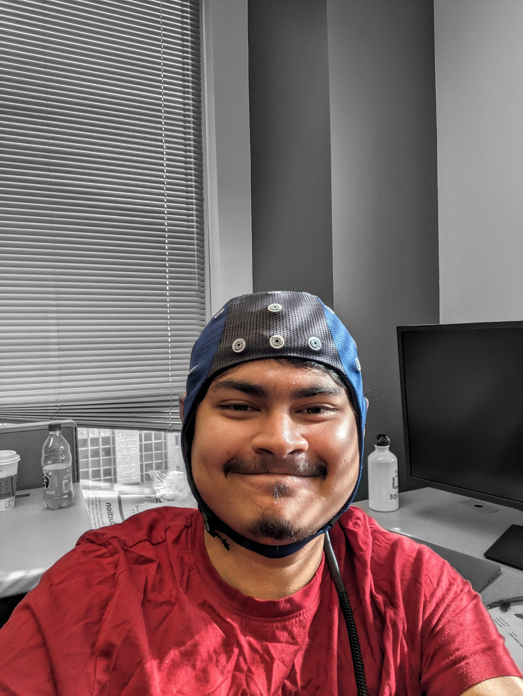

Graduate Research Associate at The Ohio State University
I work at the intersection of neuroscience and AI — building systems that decode brain signals to understand how humans perceive speech. My research spans brain-computer interfaces, multimodal learning, and EEG-based auditory attention decoding, supervised by Prof. Donald Williamson in the ASPIRE Group.

Latest
Focus Areas
Decoding cognitive states from neural signals for real-world assistive systems
Bridging neuroscience and deep learning to model auditory attention and perception
Signal processing and deep learning for speech understanding and sound event detection
Cross-modal representation learning across EEG, speech, gaze, and video
Privacy-preserving clinical audio AI and accessible assistive technologies
Neural correlates of auditory attention in naturalistic listening environments
Academic Background
Research focus on EEG-based auditory attention decoding, contrastive learning for neural-speech alignment, and multimodal BCI systems. Advisor: Prof. Donald Williamson, ASPIRE Group.
Thesis: Medical Sound Event Detection Using Audio Spectrogram Fourier Network. Designed an attention-free transformer using FFT-based sublayers achieving significant improvements over Audio Spectrogram Transformer.
Work History
Research Output
Selected Work
A POMDP-based reinforcement learning system that decodes auditory attention from EEG brain signals for real-time, uncertainty-aware control of neuro-steered hearing aids.
Collected and synchronized hundreds of hours of multimodal EEG, eye gaze, head motion, audio, and video data to identify neural correlates of speech attention.
Supervised contrastive learning framework using dilated convolutions and cross-modal attention to temporally align EEG signals with speech stimuli in naturalistic listening.
Pipeline using Wave-U-Net for audio source separation to enable privacy-preserving cough detection from ambient audio, improving accuracy while protecting speech privacy.
Dilated 1D CNN for end-to-end identification of ALS from raw EMG signals without hand-crafted feature extraction. Achieved 97.74% overall accuracy.
LSTM autoencoder for IMU sensor signals and convolutional autoencoder on optical-flow features for video, with a parametric anomaly score fusion strategy.
Deep dilated CNN estimating direction of arrival from multi-channel audio on a UAV, enabling drone-based search and rescue without hand-crafted features or ego-noise reduction.
Dual-purpose assistive device for visually impaired users with real-time object detection and OCR, integrated with a refreshable Braille display for portable reading and environmental awareness.
Modular conversational agent with NLU, dialog management, and response generation, integrating intent/entity recognition, sentiment modeling, and neural response generation.
Recognition
Center for Cognitive and Brain Sciences · The Ohio State University
IEEE Signal Processing Society
Department of Computer Science & Engineering · The Ohio State University
Unsupervised Anomaly Detection in Multimodal Autonomous Systems · ICASSP 2020, Barcelona
Privacy-aware Office Activity Recognition from FPV Body Cameras · ICIP 2019, Taipei
Refreshable Braille Display · Final at Stamford University, Hua Hin, Thailand
Search & Rescue with Drone-Embedded Sound Source Localization
Department of EEE · Bangladesh University of Engineering and Technology
Technical
Get in Touch
I'm always open to discussing research, collaborations, or internship opportunities. Feel free to reach out.